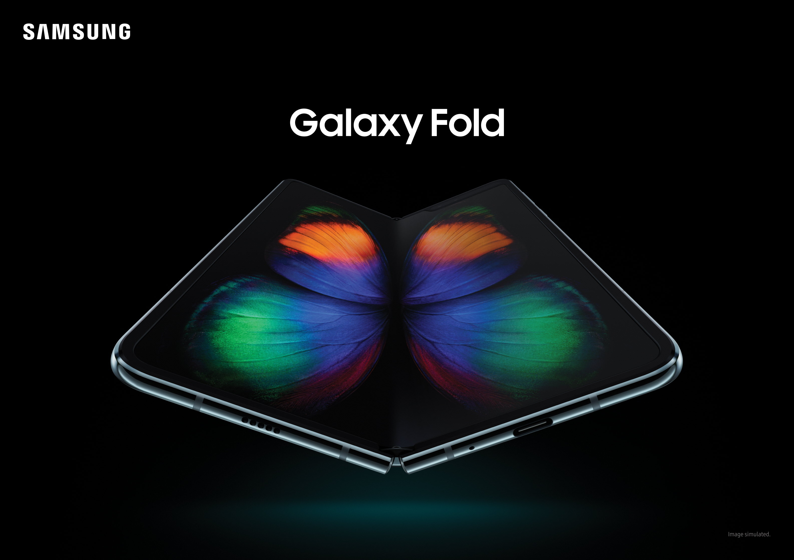
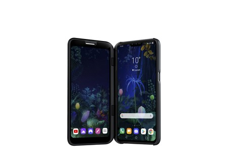
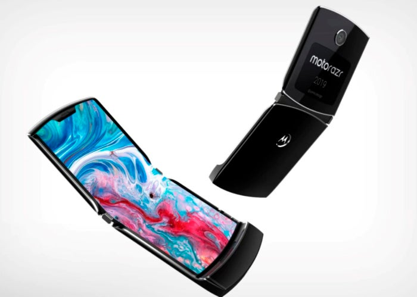
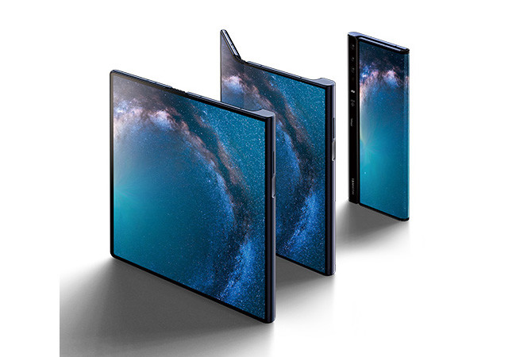

TELEFONOS PLEGABLES POR MARCAS
| NOMBRE | DESCRIPCION | IMAGEN |
|---|
| Samsung, Fold |
El Samsung Fold es el ejemplar de la compañia con el cual busca mostrar su poder y liderazgo
en el area de los telefonos plegables frente a las otras compañias que estan detras, ademas busca
impactar fuertemente los mercados con sus productos de ultima linea. |
 |
| LG, V50 Thinq |
El modelo V50 Thinq de la compañia LG es un telefono plegable (No Flexible) que esta enfocado
mas que todo en el ambito de los video juegos. manteniendo una semejanza a la consola de Nintendo,
hablo de la Nintendo DS (Dual Screen) que cuenta con dos pantallas para un uso mas comodo y un
juego mucho mas dinamico. |
 |
| Motorola, Razr |
Motorola, una de las marcas mas reconocidas a nivel mundial por su buena calidad precio en celulares,
lanza al mercado su prospecto de telefono plegable y flexible inspirado en el Motorola Razr del año
2005, conservando su diseño fiel pero con las caracterisiticas modernas que brinda la tecnologia
para hacer mucho mas funcional este dispositivo. |
 |
| Huawei, Mate X |
El gigante chino no se queda atras, el año pasado saco su modelo de telfono, el Huawei Mate X
conla especial funcionalidad de que se puede doblar y desplegar, logrando asi una sola pantalla mas grande,
un concepto parecido al del Samsung Fold, pero de distintas marcas. No cabe duda de que estas marcas
han escarvado bastante y obtenido reultados muy buenos. |
 |